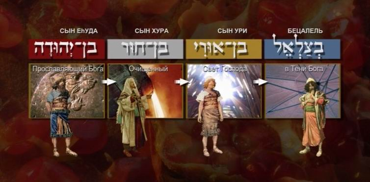
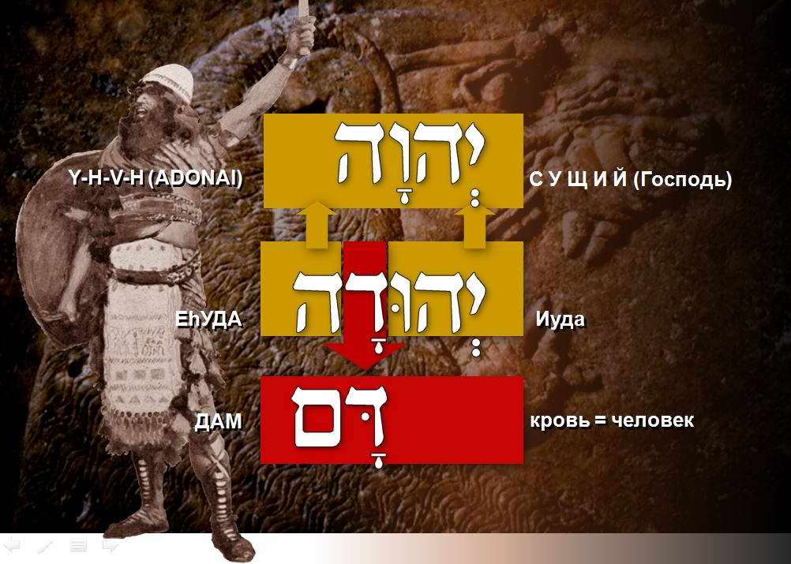
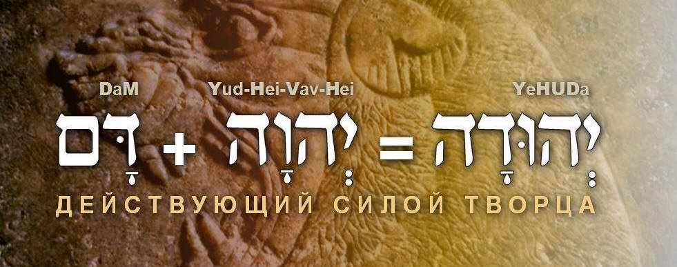
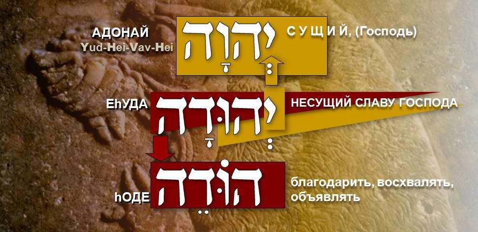
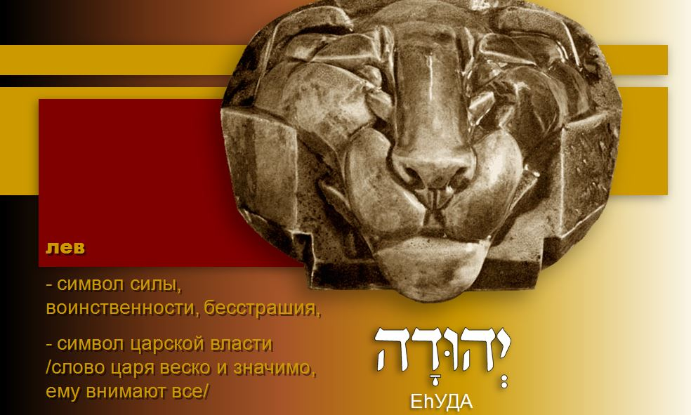
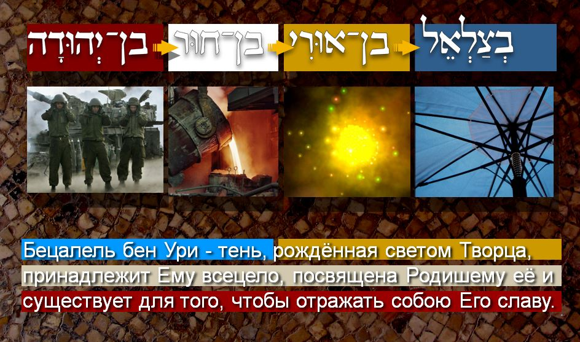

Bezalel. One Who Glorifies God
"See, I have called by name Bezalel the son of Uri, the son of Hur, of the tribe of Yehudah…"
רְאֵה קָרָאתִי בְשֵׁם בְּצַלְאֵל בֶּן־אוּרִי בֶן־חוּר לְמַטֵּה יְהוּדָה׃
Exod. 31:2 RE'E KARATI BE-SHEM BETSALEL, BEN URI, BEN HUR, MI-MATE YEHUDA
The genealogy of Bezalel, son of Uri, son of Hur, of the tribe of Yehudah, occurs four times in Scripture. Is that a lot or a little, you may ask? It is a great deal, considering that David, the person most often mentioned in the Tanakh, has only two (plus one incomplete).

BEZALEL. One who glorifies God
Yehudah is a unique name. There are many names in the Bible that contain a particle of the great name of the Most High (the Tetragrammaton). Thus the name of Bezalel's father, URI, contains a particle of it, the first letter of the great name. But I cannot recall any other name in Scripture that contains the whole of this name. In essence, Yehudah is the awesome name of God (the Tetragrammaton) with the letter dalet placed inside it, the first letter of the word DAM (blood = man). A man immersed in the glory of God, embraced by the name of the Most High.
BEZALEL, SON OF LIGHT. The Calling (part I)
BEZALEL, SON OF LIGHT. Under the Shelter of the Most High (part II)
BEZALEL, SON OF LIGHT. The Light of the LORD (part III)
BEZALEL, SON OF LIGHT. Grandfather HUR (part IV)
BEZALEL, SON OF LIGHT. One Who Glorifies God (part V)
Torah-Art studio. Film: Ephraim Kalish. Music: Daniel Kruglov.
As we have said, the genealogy of our hero goes back to one of the most glorious tribes of Israel, to its forefather Yehudah.
The best-known interpretation of the name Yehudah is "one who praises the LORD". It can also be interpreted differently: "one who acts by the power of the Creator". In interpreting names, Jewish tradition looks not only at the possible combinations of words or parts of words that make up the name, but also at combinations of letters, or even a single letter as the beginning of a corresponding word. Of course, this approach is possible only when studying the original (the Hebrew texts).
יְהוּדָה Yehudah. One who glorifies God
"Bezalel, son of Uri, son of Hur, of the tribe of Yehudah."
The tribe of Yehudah (Judah) has something special that sets it apart among all Israel. It is no accident that it was promised to give Israel kings for ever. The Spirit of God gave it the title: "Judah is My sceptre" (Ps. 60:7). It was the tribe of Yehudah that went first when Israel fought the wars of God. And there were weighty reasons for this. It is true that it was the most numerous and strongest of all the tribes. But that was not decisive. What really defined its nature was the name that proclaimed its calling: Yehudah, bearing all the might of the awesome and terrible name of the LORD, which makes the nations tremble.
The name Yehudah is unique. There is no other like it in which all four letters of the unpronounceable name of the Most High are present. Moreover, the four highlighted letters of יְהוּדָה come in exactly the same order as in this great name: יְהוָה (YHWH, the great name of God). Between the letters of this name the letter dalet, דָ, is inserted, the first letter of the word דָם [DAM], which in Hebrew means blood = man. So the name Yehudah can be interpreted as follows: a man acting by the power of the Creator, that is, one who bears all the might of the name of the Most High.


There is one more reason why, of all the tribes, it was to Yehudah that great strength and might were given, the royal sceptre and the Messiah born of him. That reason is the praise of the LORD: praise contained in his name and defining his nature. As it is written: "…now will I praise the LORD; therefore she called his name Yehudah" (Gen. 29:35).
In this name, יְהוּדָה [YEHUDAH], we see the four-letter name of the LORD, already familiar to us, represented by the letter יְ [Y], and the verb הוּדָה, "to give thanks". So we can read it as "one who thanks (glorifies) the LORD". This is the secret of the power of the name Yehudah. And this is one of the important qualities of Jewish art: thanksgiving and praise to the Creator.

The name Yehudah, like each of the tribes of Israel, has its own symbol. The description of these symbols is found in Yaakov's blessing, recorded in the book of Bereshit (Genesis): "Yehudah is a lion's whelp; from the prey, my son, thou art gone up. He stooped down, he couched as a lion, and as a lioness; who shall rouse him up?" (Gen. 49:9). The lion is the sign of the tribe of Yehudah, a symbol of strength, valour, fearlessness and royal power. The word of a king is weighty and significant; everyone listens to it. Yehudah is a man, flesh and blood, filled by the Spirit of the Eternal One with the power and glory of the Creator.

So Jewish art, as the Creator defines it, must carry within it the genetics of the name Yehudah and have its quality. It is an art to which many listen, like the word of a king. It carries all the might of the name of the LORD and glorifies Him among the nations. This is the meaning of the name of Bezalel's great-great-grandfather, Yehudah.
The father of a shadow is light. And Bezalel's full name, his genealogy, can be read like this: Bezalel son of Uri, a shadow born of the Light of the Creator and belonging wholly to Him; son of Hur, dedicated to the One who gave him birth; son of Yehudah, called to reflect the glory of the Maker.

Knowing the truth about creativity, its tasks and aims as the Maker conceived them, makes us truly free in our creative work. By following the sacred commandment about art, the artist can rise in his work to a level beyond the earthly, that is, go up to the mountain of the LORD: like Moshe, go up the mountain and see the Heavenly Temple. Only an artist who loves the Creator and honours His law can fulfil the commandment "make for Me". Only such a person can lay claim to creating before His face: to be filled with spirit, knowledge and understanding from God.
"Make for Me" means make it according to the law that I have set. Purify yourself, sanctify yourself for Me, bow down under My shelter and give Me all the glory and honour, and then I will fill you, a small and weak person, with inspiration and the power of My Spirit, with wisdom, knowledge and understanding in every craft. By them I created the heavens and the earth and all that is in them; by them you will create what I command you.
This is the essence of the name of Bezalel son of Uri, son of Light. This is the genetics of Israeli creativity as the God of Israel has defined it, and so it will surely become. Amen.
BEZALEL, SON OF LIGHT. The Calling (part I)
BEZALEL, SON OF LIGHT. Under the Shelter of the Most High (part II)
BEZALEL, SON OF LIGHT. The Light of the LORD (part III)
BEZALEL, SON OF LIGHT. Grandfather HUR (part IV)
BEZALEL, SON OF LIGHT. One Who Glorifies God (part V)
This article has been revised and expanded by the author. (Ephraim Kalish's article was first published on the site skiniyadavidova.org.)
Author: Ephraim Kalish / Torah-Art
 His Hands Were Faith (Exod. 17:12)
His Hands Were Faith (Exod. 17:12) Bezalel. Under the Shelter of the Most High
Bezalel. Under the Shelter of the Most High The Sanctuary: Mishkan and Mikdash
The Sanctuary: Mishkan and Mikdash